| ・ （社）関西学生会 平成28年度学生員卒業研究発表講演会＠大阪大学吹田キャンパス (H29.03.11) | |||
去年は3人発表で今年も3人です．音響計測の研究で，B4のT口さんが「フレンチホルンの直管モデルにおけるスペーサが周波数応答に与える影響」，流体計測の研究で，B4のS田くんが「ステレオPIVによるNACA0012翼周りの3次元渦度場計測 」，光計測の研究で，B4のK保西くんが「位相回復ホログラフィを用いた微粒子計測に関する研究 」をそれぞれ発表しました．今年は来年発表予定の3回生が聴講で参加しました．研究室での発表練習と実際の発表の違いや，他のいろいろな分野の発表を聴いて今後のプレゼンに活かしていきます． |
|||
|
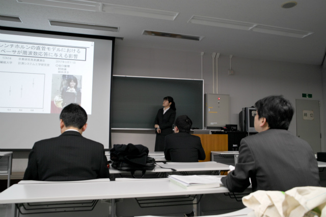
まずはT口さん |
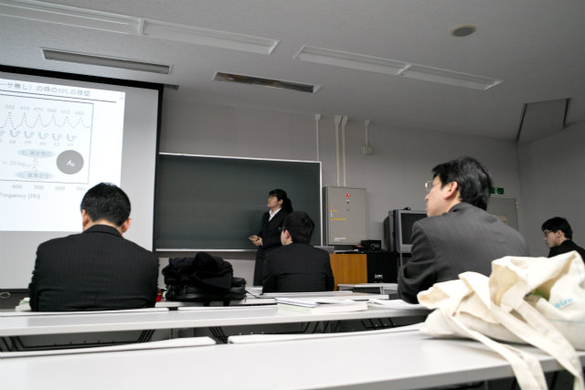
ホルン奏者でもあります | ||
|
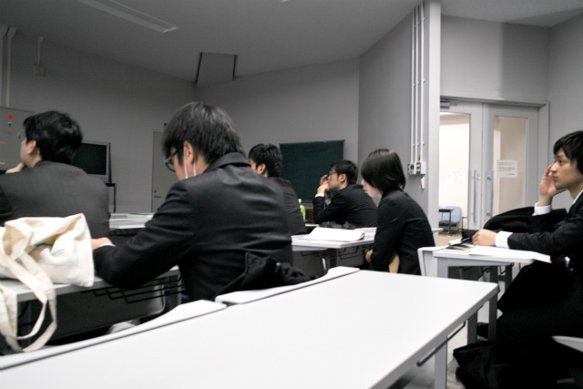
B3のN谷くんとB4のD口さん |
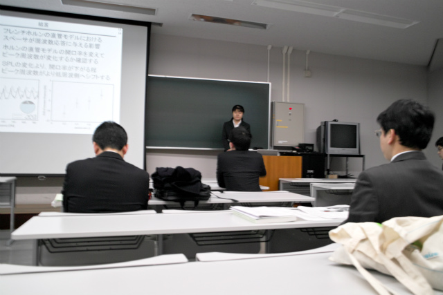
質疑中 | ||
|
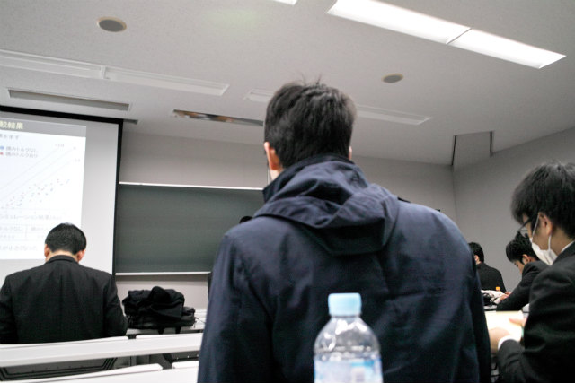
B3のT中くん |
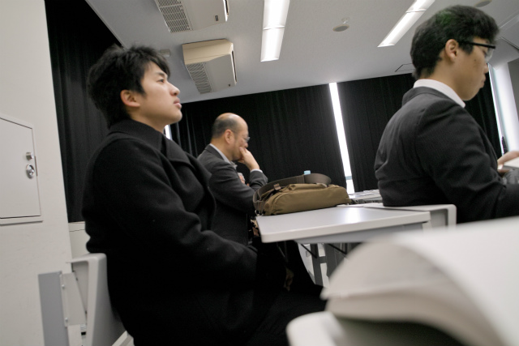
B3のT田くん | ||
|
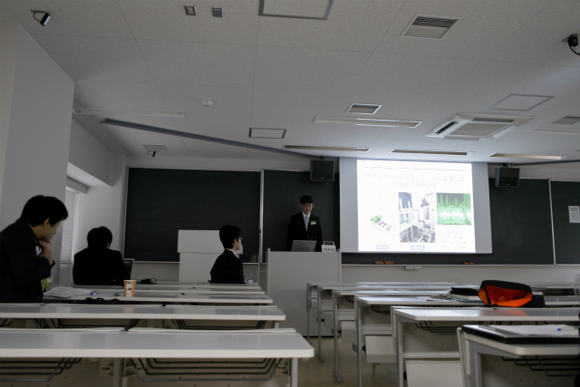
次は別の会場でS田くん |
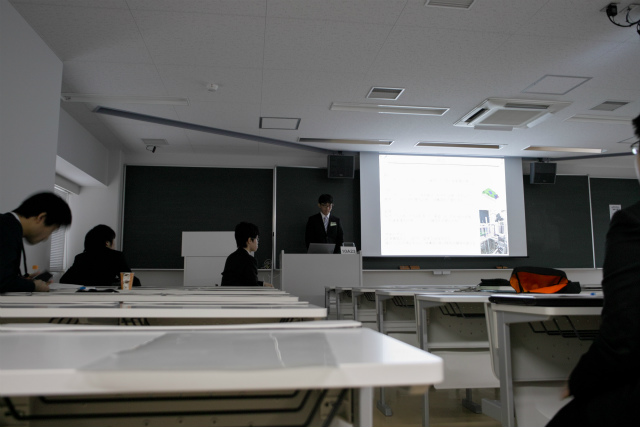
流体は奥が深い | ||
|
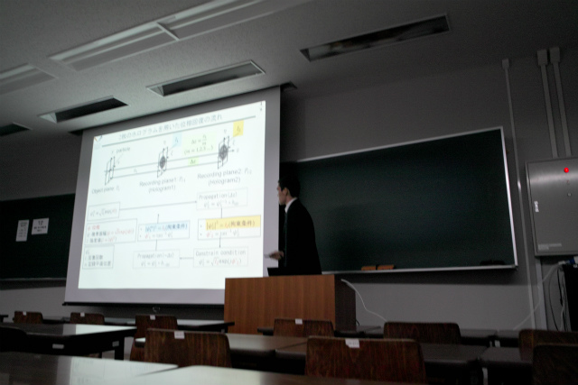
続きで別室のK保西くん |
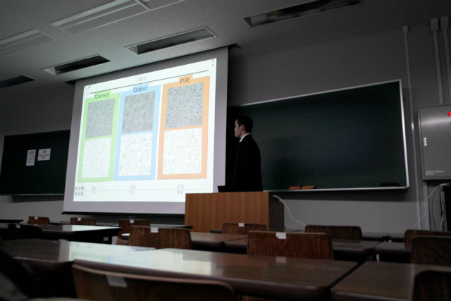
わかりやすい説明スライド | ||
|
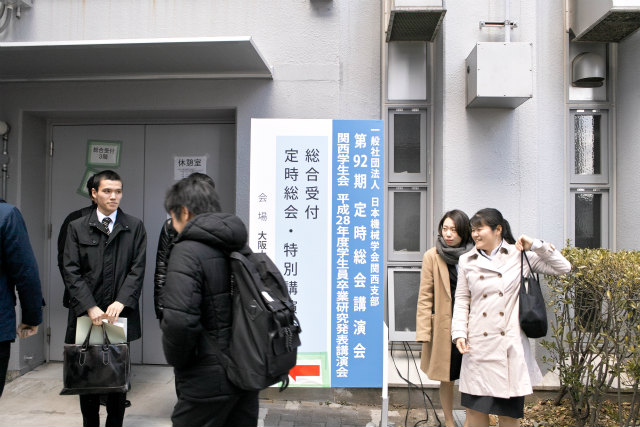
整列 |
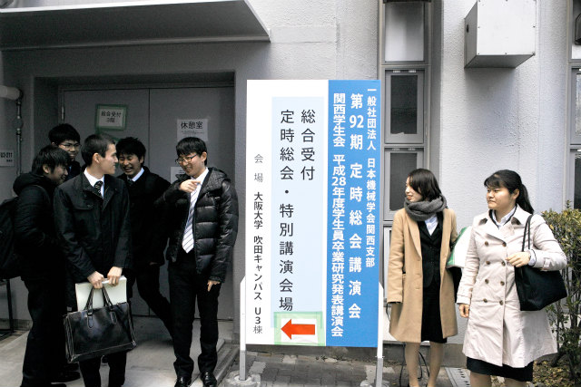
ポジション調整 | ||
|
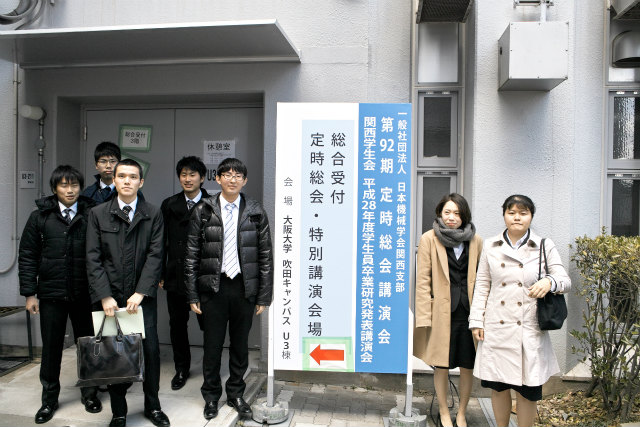
定番写真 |
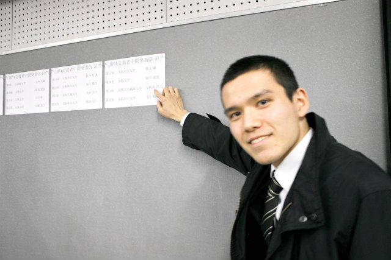
携帯でも撮ったけど，ちゃんと両親に送った？ | ||
|
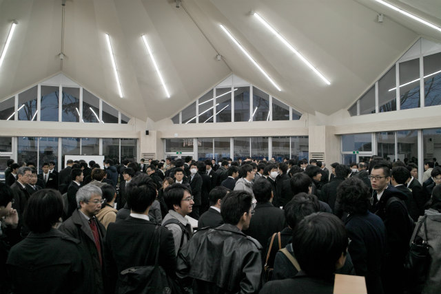
まさに立錐の余地無し |
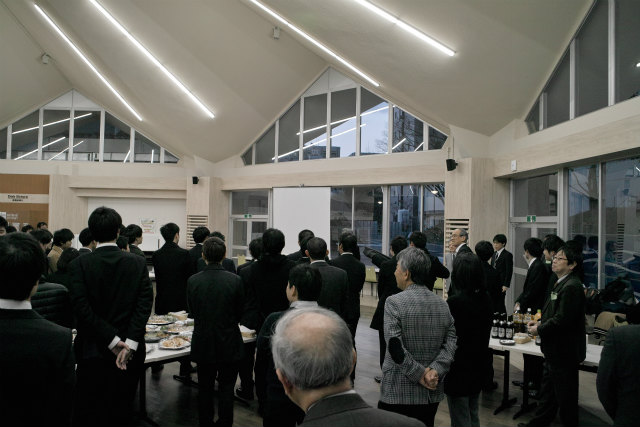
窓側は空いてる | ||
|
場所確保 |
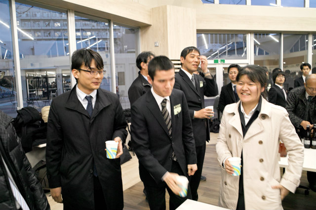
M1から合流のE藤くん | ||
|
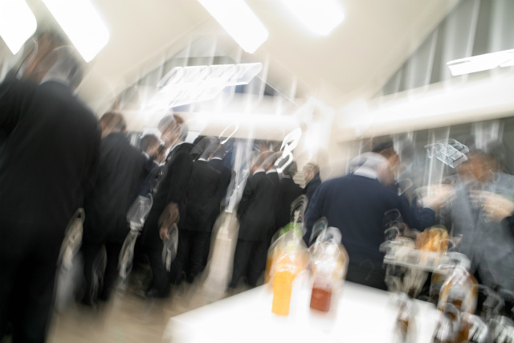
乾杯 |
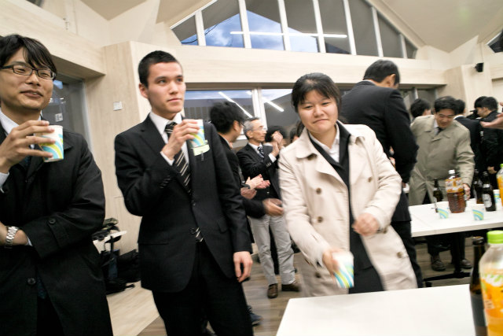
結果知ってるけど盛り上がる | ||
|
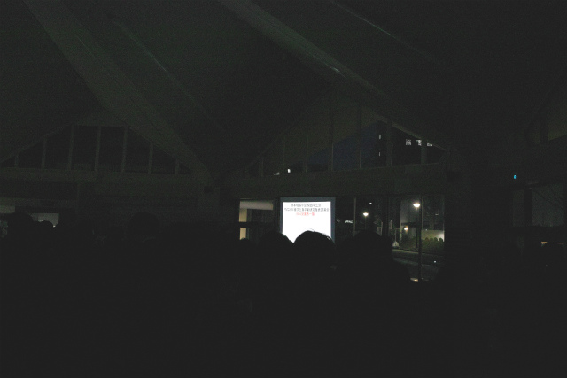
結果発表！ |
コロンビア | ||